javascript 中的数据结构和算法
复杂度
算法的执行时间与每行代码的执行次数成正比，用 T(n) = O(f(n)) 表示，其中 T(n) 表示算法执行总时间，f(n) 表示每行代码执行总次数，而 n 往往表示数据的规模。这就是大 O 时间复杂度表示法
时间复杂度引用
大 O 时间复杂度表示法 实际上并不具体表示代码真正的执行时间，而是表示 代码执行时间随数据规模增长的变化趋势，所以也叫 渐进时间复杂度，简称 时间复杂度（asymptotic time complexity）。
- 定义： 时间复杂度（Time complexity）是一个函数，它定性描述该算法的运行时间。这是一个代表算法输入值的字符串的长度的函数. 时间复杂度常用大 O 表述，不包括这个函数的低阶项和首项系数
function aFun() {
console.log("Hello, World!"); // 需要执行 1 次
return 0; // 需要执行 1 次
}那么这个方法需要执行 2 次运算。
function bFun(n) {
for (let i = 0; i < n; i++) {
// 需要执行 (n + 1) 次
console.log("Hello, World!"); // 需要执行 n 次
}
return 0; // 需要执行 1 次
}那么这个方法需要执行 ( n + 1 + n + 1 ) = 2n +2 次运算。
function cal(n) {
let sum = 0; // 1 次
let i = 1; // 1 次
let j = 1; // 1 次
for (; i <= n; ++i) {
// n 次
j = 1; // n 次
for (; j <= n; ++j) {
// n * n ，也即是 n平方次
sum = sum + i * j; // n * n ，也即是 n平方次
}
}
}注意，这里是二层 for 循环，所以第二层执行的是 n * n = n(2) 次，而且这里的循环是 ++i，和例子 2 的是 i++，是不同的，是先加与后加的区别。 那么这个方法需要执行 ( n(2) + n(2) + n + n + 1 + 1 +1 ) = 2n(2) +2n + 3
TIP
以时间复杂度为例，由于 时间复杂度 描述的是算法执行时间与数据规模的 增长变化趋势，所以 常量、低阶、系数 实际上对这种增长趋势不产生决定性影响，所以在做时间复杂度分析时 忽略 这些项。 所以，上面例子 1 的时间复杂度为 T(n) = O(1)，例子 2 的时间复杂度为 T(n) = O(n)，例子 3 的时间复杂度为 T(n) = O(n(2))。
时间复杂度分析
只关注循环执行次数最多的一段代码
jsfunction cal(n) { let sum = 0; let i = 1; for (; i <= n; ++i) { sum = sum + i; } return sum; }执行次数最多的是 for 循环及里面的代码，执行了 n 次，所以时间复杂度为 O(n)。
加法法则：总复杂度等于量级最大的那段代码的复杂度 多段代码取最大：比如一段代码中有单循环和多重循环，那么取多重循环的复杂度。
jsfunction cal(n) { let sum_1 = 0; let p = 1; for (; p < 100; ++p) { sum_1 = sum_1 + p; } let sum_2 = 0; let q = 1; for (; q < n; ++q) { sum_2 = sum_2 + q; } let sum_3 = 0; let i = 1; let j = 1; for (; i <= n; ++i) { j = 1; for (; j <= n; ++j) { sum_3 = sum_3 + i * j; } } return sum_1 + sum_2 + sum_3; }上面代码分为三部分，分别求 sum_1、sum_2、sum_3 ，主要看循环部分。 第一部分，求 sum_1 ，明确知道执行了 100 次，而和 n 的规模无关，是个常量的执行时间，不能反映增长变化趋势，所以时间复杂度为 O(1)。 第二和第三部分，求 sum_2 和 sum_3 ，时间复杂度是和 n 的规模有关的，为别为 O(n) 和 O(n(2))。 所以，取三段代码的最大量级，上面例子的最终的时间复杂度为 O(n(2))。 同理类推，如果有 3 层 for 循环，那么时间复杂度为 O(n(3))，4 层就是 O(n(4))。 所以，总的时间复杂度就等于量级最大的那段代码的时间复杂度。
乘法法则：嵌套代码的复杂度等于嵌套内外代码复杂度的乘积 嵌套代码求乘积：比如递归、多重循环等。
jsfunction cal(n) { let ret = 0; let i = 1; for (; i < n; ++i) { ret = ret + f(i); // 重点为 f(i) } } function f(n) { let sum = 0; let i = 1; for (; i < n; ++i) { sum = sum + i; } return sum; }方法 cal 循环里面调用 f 方法，而 f 方法里面也有循环。 所以，整个 cal() 函数的时间复杂度就是，T(n) = T1(n) * T2(n) = O(n*n) = O(n(2))
多个规模求加法：比如方法有两个参数控制两个循环的次数，那么这时就取二者复杂度相加
jsfunction cal(m, n) { let sum_1 = 0; let i = 1; for (; i < m; ++i) { sum_1 = sum_1 + i; } let sum_2 = 0; let j = 1; for (; j < n; ++j) { sum_2 = sum_2 + j; } return sum_1 + sum_2; }以上代码也是求和 ，求 sum_1 的数据规模为 m、求 sum_2 的数据规模为 n，所以时间复杂度为 O(m+n)。 公式：T1(m) + T2(n) = O(f(m) + g(n))
多个规模求乘法：比如方法有两个参数控制两个循环的次数，那么这时就取二者复杂度相乘
jsfunction cal(m, n) { let sum_3 = 0; let i = 1; let j = 1; for (; i <= m; ++i) { j = 1; for (; j <= n; ++j) { sum_3 = sum_3 + i * j; } } }以上代码也是求和，两层 for 循环 ，求 sum_3 的数据规模为 m 和 n，所以时间复杂度为 O(m*n)。 公式：T1(m) * T2(n) = O(f(m) * g(n)) 。
常见时间复杂度：
多项式阶：随着数据规模的增长，算法的执行时间和空间占用，按照多项式的比例增长
O(1)（常数阶）、O(logn)（对数阶）、O(n)（线性阶）、O(nlogn)（线性对数阶）、O(n(2)) （平方阶）、O(n(3))（立方阶）
- O(1)【常数】：无论数据规模 n 如何增长，计算时间是不变的， 即不管如何执行，代码执行时间都是固定的
const add = (n) => n + 1; // n无论如何增加， 计算时间都是不变的，- O(logN)对数阶
function fn(n) {
let i = 1;
while (i < n) {
i *= 2;
}
}代码是从 1 开始，每次循环就乘以 2，当大于 n 时，循环结束。 其实就是高中学过的等比数列，i 的取值就是一个等比数列。在数学里面是这样子的： 2(0) 2(1) 2(2) ... 2(k) ... 2(x) = n 所以，我们只要知道 x 值是多少，就知道这行代码执行的次数了，通过 2x = n 求解 x，数学中求解得 x = log(2)^n 。所以上面代码的时间复杂度为 O(log(2)^n)。 实际上，不管是以 2 为底、以 3 为底，还是以 10 为底，我们可以把所有对数阶的时间复杂度都记为 O(logn)。为什么呢？ 因为对数之间是可以互相转换的，log3^n = log(3)^2 _ log(2)^n，所以 O(log(3)^n) = O(C _ log(2)^n)，其中 C=log(3)^2 是一个常量。 由于 时间复杂度 描述的是算法执行时间与数据规模的 增长变化趋势，所以 常量、低阶、系数 实际上对这种增长趋势不产生决定性影响，所以在做时间复杂度分析时 忽略 这些项。 因此，在对数阶时间复杂度的表示方法里，我们忽略对数的 “底”，统一表示为 O(logn)
- O(n)： 线性复杂度，着数据规模 n 的增，计算时间也会随着 n 线性增
function fn(n) {
for (let i = 0; i < n; i++) {
console.log(i);
}
}O(nlgn)
jsfunction aFun(n) { let i = 1; while (i <= n) { i = i * 2; } return i; } function cal(n) { let sum = 0; for (let i = 1; i <= n; ++i) { sum = sum + aFun(n); } return sum; }aFun 的时间复杂度为 O(logn)，而 cal 的时间复杂度为 O(n)，所以上面代码的时间复杂度为 T(n) = T1(logn) * T2(n) = O(logn*n) = O(nlogn) 。
非多项式阶：随着数据规模的增长，算法的执行时间和空间占用暴增，这类算法性能极差
包括 O(2(n))（指数阶）、O(n!)（阶乘阶）。
O(2(n))（指数阶）例子：
aFunc( n ) {
if (n <= 1) {
return 1;
} else {
return aFunc(n - 1) + aFunc(n - 2);
}
}时间复杂度分类
最好情况时间复杂度（best case time complexity）：在最理想的情况下，执行这段代码的时间复杂度。
最坏情况时间复杂度（worst case time complexity）：在最糟糕的情况下，执行这段代码的时间复杂度。
平均情况时间复杂度（average case time complexity），用代码在所有情况下执行的次数的加权平均值表示。也叫 加权平均时间复杂度 或者 期望时间复杂度。
均摊时间复杂度（amortized time complexity）: 在代码执行的所有复杂度情况中绝大部分是低级别的复杂度，个别情况是高级别复杂度且发生具有时序关系时，可以将个别高级别复杂度均摊到低级别复杂度上。基本上均摊结果就等于低级别复杂度。
js// n 表示数组 array 的长度 function find(array, n, x) { let i = 0; let pos = -1; for (; i < n; ++i) { if (array[i] == x) { pos = i; break; } } return pos; }find 函数实现的功能是在一个数组中找到值等于 x 的项，并返回索引值，如果没找到就返回 -1 。
最好情况时间复杂度，最坏情况时间复杂度
如果数组中第一个值就等于 x，那么时间复杂度为 O(1)，如果数组中不存在变量 x，那我们就需要把整个数组都遍历一遍，时间复杂度就成了 O(n)。所以，不同的情况下，这段代码的时间复杂度是不一样的。 所以上面代码的最好情况时间复杂度为 O(1)，最坏情况时间复杂度为 O(n)。 平均情况时间复杂度 如何分析平均时间复杂度 ？代码在不同情况下复杂度出现量级差别，则用代码所有可能情况下执行次数的加权平均值表示。 要查找的变量 x 在数组中的位置，有 n+1 种情况：在数组的 0 ～ n-1 位置中和不在数组中。我们把每种情况下，查找需要遍历的元素个数累加起来，然后再除以 n+1，就可以得到需要遍历的元素个数的平均值，即：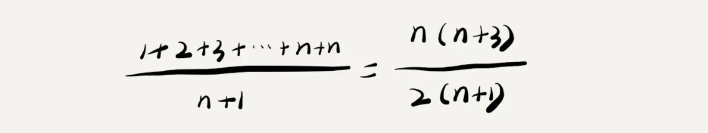
Preview省略掉系数、低阶、常量，所以，这个公式简化之后，得到的平均时间复杂度就是 O(n)。 我们知道，要查找的变量 x，要么在数组里，要么就不在数组里。这两种情况对应的概率统计起来很麻烦，我们假设在数组中与不在数组中的概率都为 1/2。另外，要查找的数据出现在 0～n-1 这 n 个位置的概率也是一样的，为 1/n。所以，根据概率乘法法则，要查找的数据出现在 0～n-1 中任意位置的概率就是 1/(2n)。 因此，前面的推导过程中存在的最大问题就是，没有将各种情况发生的概率考虑进去。如果我们把每种情况发生的概率也考虑进去，那平均时间复杂度的计算过程就变成了这样
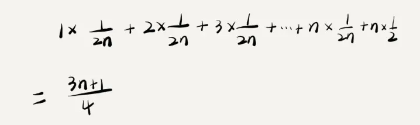
Preview这个值就是概率论中的 加权平均值，也叫 期望值，所以平均时间复杂度的全称应该叫 加权平均时间复杂度 或者 期望时间复杂度。 所以，根据上面结论推导出，得到的 平均时间复杂度 仍然是 O(n)
WARNING
排序：O(1) < O(lgn) < O(n) < O(nlgn) < O(n^2) < O(n^3) < O(2^n) < O(n!)
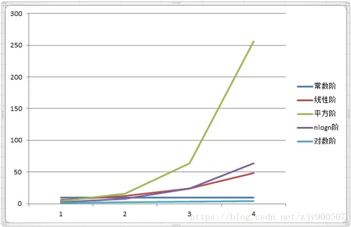
空间复杂度引用
时间复杂度的全称是 渐进时间复杂度，表示 算法的执行时间与数据规模之间的增长关系 。 类比一下，空间复杂度全称就是 渐进空间复杂度（asymptotic space complexity），表示 算法的存储空间与数据规模之间的增长关系 。
定义： 算法运行时所占用的临时存储空间 一个算法执行期间所占用的存储量分为三部分：
算法本身的代码所占用的空间
输入数据所占用的空间
辅助变量所占用的空间 由于实现不同算法所需的代码不会有数量级的差别，所以算法本身代码所占用的空间我们可以不考虑 输入的数据所占用的空间是由问题决定的，与算法无关，所以我们也不需要考虑 我们需要考虑的只有一个：程序执行期间，辅助变量所占用的空间。 计算方法类似于计算算法的时间复杂度，空间复杂度我们用 S(n) 来表示，它同样是输入数据规模 n 的函数，用大 O 表示法记为：
S(n) = O(g(n)) 其中 g(n) 是一个关于 n 的函数，如：g(n) = n、g(n) = n^2、g(n) = log2N 等等
function print(n) {
const newArr = []; // 第 2 行
newArr.length = n; // 第 3 行
for (let i = 0; i < n; ++i) {
newArr[i] = i * i;
}
for (let j = n - 1; j >= 0; --j) {
console.log(newArr[i]);
}
}跟时间复杂度分析一样，我们可以看到，第 2 行代码中，我们申请了一个空间存储变量 newArr ，是个空数组。第 3 行把 newArr 的长度修改为 n 的长度的数组，每项的值为 undefined ，除此之外，剩下的代码都没有占用更多的空间，所以整段代码的空间复杂度就是 O(n)。 我们常见的空间复杂度就是 O(1)、O(n)、O(n(2))，像 O(logn)、O(nlogn) 这样的对数阶复杂度平时都用不到。
数组
JavaScript 中对数组的定义
数组的标准定义是：一个存储元素的线性集合（collection），元素可以通过索引来任意存 取，索引通常是数字，用来计算元素之间存储位置的偏移量。几乎所有的编程语言都有类 似的数据结构。然而 JavaScript 的数组却略有不同。 JavaScript 中的数组是一种特殊的对象，用来表示偏移量的索引是该对象的属性，索引可 能是整数。然而，这些数字索引在内部被转换为字符串类型，这是因为 JavaScript 对象中 的属性名必须是字符串。数组在 JavaScript 中只是一种特殊的对象，所以效率上不如其他 语言中的数组高。 JavaScript 中的数组，严格来说应该称作对象，是特殊的 JavaScript 对象，在内部被归类为数 组。由于 Array 在 JavaScript 中被当作对象，因此它有许多属性和方法可以在编程时使用
存取函数
查找元素
indexOf: 如果目标数组包含该参数，就返回该元素在数组中的索引；如果不包含，就返回 -1【如果数组中包含多个相同的元素，indexOf() 函数总是返回第一个与参数相同的元素的索 引】lastIndexOf：返回相同元素中最后一个元素的索引，如果没找到相同元素，则返回 -1
数组的字符串表示
join:返回一个包含 数组所有元素的字符串，各元素之间用逗号分隔开toString:返回一个包含数组所有元素的字符串，各元素之间用逗号分隔开
由已有数组创建新数组
concatsplice
可变函数
添加元素
push:将一个或多个元素添加到数组末尾：【返回数组的长度】
let num = [1, 2, 3];
num.push(1, 2, 3);
num.push(...[1, 2, 3]);unshift:将一个或多个元素添加到数组开头：【返回数组的长度】jslet num = [1, 2, 3]; num.unshift(1, 2, 3); num.unshift(...[1, 2, 3]);
删除元素
pop:使用 pop() 方法可以删除数组末尾的元素【返回删除的元素】shift:shift() 方法可以删除数组的第一个元素【返回删除的元素】
数组中间位置添加或者删除元素
splice() 方法为数组添加元素，需提供如下参数：
- 起始索引（也就是你希望开始添加元素的地方）；
- 需要删除的元素个数（添加元素时该参数设为 0）；
- 想要添加进数组的元素。
数组排序
reverse: 该方法将数组中元素的顺 序进行翻转sort: 数组排序- 元素是字符串类型js
let num = ["a", "c", "d", "b"]; num.sort(); // ['a', 'b', 'c', 'd'] - 元素是数字类型js
let num = [3, 1, 2, 100, 4, 200]; num.sort(); // [1, 100, 2, 200, 3, 4] - 通过传入函数控制排序大小
迭代器方法
不生成新数组的迭代器方法
forEach:该方法接受一个函数作为参数，对数组中的每个元素使用该函数every:该方法接受一个返回值为布尔类型的函数，对数组中的每个元素使用该函数。如果对于所有的元素，该函数均返回 true，则该方法返回 truesome: 也接受一个返回值为布尔类型的函数，只要有一个元素使得该函数返回 true， 该方法就返回 truereduce:接受一个函数，返回一个值。该方法会从一个累加值开始，不断对累加值和数组中的后续元素调用该函数，直到数组中的最后一个元素，最后返回得到的累加值。jsconst num = [1, 2, 3, 4]; const total1 = num.reduce((total, current, idx) => total + current); // 10 循环3次 const total2 = num.reduce((total, current, idx) => total + current, 1); // 11 循环4次：如果没有提供 initialValue，reduce 会从索引 1 的地方开始执行 callback 方法，跳过第一个索引。如果提供 initialValue，从索引 0 开始
生成新数组的迭代器方法
map:对数组中的每个元素使用某个函数,返回一个新的数组filter:传入一个返回值为布尔类型的函数,返回一个新数组，该数组包含应用该函数后结果为 true 的元素
多维数组
- 多维数组的创建
jsArray.prototype.matrix = function (rows, cols, initial) { let arr = []; for (let i = 0; i < rows; i++) { let columns = []; for (let j = 0; j < cols; j++) { columns[j] = initial; } arr[i] = columns; } return arr; };- 元素是字符串类型
栈
操作
- 定义：栈是一种特殊的列表，栈内的元素只能通过列表的一端访问，是一种先进后出，后入先出（LIFO，last-in-first-out）的数据结构
js 实现
function Stack() {
this.dataStore = [];
this.top = 0;
this.push = function (ele) {
this.dataStore[this.top++] = ele;
};
this.pop = function () {
return this.dataStore[--this.top];
};
this.peek = function () {
return this.dataStore[this.top - 1];
};
this.clear = function () {
this.top = 0;
this.dataStore = [];
};
this.length = function () {
return this.top;
};
}
const stack = new Stack();
console.log(stack.push("a"));
console.log(stack.push("b"));
console.log(stack.length()); // 2
console.log(stack.pop()); // b
console.log(stack.pop()); // a
module.exports = Stack;应用
数制间的相互转换
可以利用栈将一个数字从一种数制转换成另一种数制。假设想将数字 n 转换为以 b 为基数 的数字，实现转换的算法如下。 (1) 最高位为 n % b，将此位压入栈。 (2) 使用 n/b 代替 n。 (3) 重复步骤 1 和 2，直到 n 等于 0，且没有余数。 (4) 持续将栈内元素弹出，直到栈为空，依次将这些元素排列，就得到转换后数字的字符 串形式。 【此算法只针对基数为 2~9 的情况】
function mulBase(num, base) {
const stack = new Stack();
while (num > 0) {
stack.push(num % base);
num = Math.floor(num / base);
}
let converted = "";
while (stack.length() > 0) {
converted += stack.pop();
}
return converted;
}回文处理
const Stack = require("./stack.js");
function isPalindrome(word) {
word = word + "";
if (!word) return;
const stack = new Stack();
for (let i = 0; i < word.length; i++) {
stack.push(word[i]);
}
let words = "";
while (stack.length() > 0) {
words += stack.pop();
}
console.log(words, word);
return words === word;
}
console.log(isPalindrome("121")); // true
console.log(isPalindrome(121)); // true练习
栈可以用来判断一个算术表达式中的括号是否匹配。编写一个函数，该函数接受一个算 术表达式作为参数，返回括号缺失的位置。下面是一个括号不匹配的算术表达式的例子：
2.3 + 23 / 12 + (3.14159×0.24jsfunction getMatch(str) { str += ""; if (!str) return; const stack = new Stack(); for (let index = 0; index < str.length; index++) { if (str[index] === "(") { stack.push(index); } if (str[index] === ")") { stack.pop(index); } } return stack.length() ? stack.pop() + 1 : true; } const str = "2.3 + 23 / 12 + (3.14159×0.24"; console.log(getMatch(str)); // 17假设括号都是匹配的， 越靠后的左括号，对应的右括号越靠前，那就左括号入栈，有括号出栈
力扣给定一个只包括 '('，')'，'{'，'}'，'['，']' 的字符串 s ，判断字符串是否有效。 有效字符串需满足： 左括号必须用相同类型的右括号闭合。 左括号必须以正确的顺序闭合。 每个右括号都有一个对应的相同类型的左括号。
js/** * @param {string} s * @return {boolean} */ var isValid = function (s) { if (s.length % 2 === 1) return false; const stack = []; for (let i = 0; i < s.length; i++) { console.log(i, 123); if (["(", "{", "["].includes(s[i])) { stack.push(s[i]); } else { const last = stack[stack.length - 1]; if ( (last === "(" && s[i] === ")") || (last === "{" && s[i] === "}") || (last === "[" && s[i] === "]") ) { stack.pop(); } else { return false; } } } return !stack.length; };
队列
队列是一种先进先出（First-In-First-Out，FIFO）的数据结构，只能在队尾插入元素，在队首删除元素
js 实现
队列对于 js 来说本质还是用的数组，只不过是对数组进行了相应的包装， 提供出各种方法
function Queue() {
this.dataStore = [];
this.enqueue = function (ele) {
return this.dataStore.push(ele);
};
this.dequeue = function () {
return this.dataStore.shift();
};
this.front = function () {
return this.dataStore[0];
};
this.back = function () {
return this.dataStore[this.dataStore.length - 1];
};
this.toString = function (s = " ") {
return this.dataStore.join(s);
};
this.empty = function () {
return !this.dataStore.length;
};
this.getDataStore = function () {
return this.dataStore;
};
}使用队列对数据进行排序
基数排序: 是一种非比较型整数排序算法，其原理是将整数按位数切割成不同的数字，然后按每个位数分别比较
代码实现：当前代码只能实现小于 100 的整数排序
const Queue = require("./queue.js");
let list = [];
for (var i = 0; i < 10; ++i) {
list[i] = Math.floor(Math.floor(Math.random() * 101));
}
// 生成 0-9 的9个队列
const queues = [];
for (var i = 0; i < 10; ++i) {
queues[i] = new Queue();
}
/**
* 将数据根据位数进行排序
* @param {number[]} nums 需要排序的数组
* @param {Array} queues
* @param {*} digit // 当前的位数 【个位 十位 百...】
* @return {number[]} 排序后的数据
*/
function distribute(nums, queues, digit) {
for (let i = 0; i < nums.length; i++) {
// 个位
if (digit === 1) {
queues[nums[i] % 10].enqueue(nums[i]);
} else {
queues[Math.floor(nums[i] / digit)].enqueue(nums[i]);
}
}
}
// 收集某位排序号的数字
function collect(queues, nums) {
let i = 0;
for (let digit = 0; digit < 10; digit++) {
while (!queues[digit].empty()) {
nums[i++] = queues[digit].dequeue();
}
}
}
console.log("排序前", list.join(" "));
// 把个位数上的数据放到个位数对应的队列中
distribute(list, queues, 1);
// 收集个位数排序好的数据
collect(queues, list);
// 把十位数上的数据放到十位数对应的队列中
distribute(list, queues, 10);
collect(queues, list);
console.log("排序后", list.join(" "));将上面的代码改造下，改成支持整数排序
const Queue = require("./queue.js");
/**
* 对数组中的数字进行排序
* @param {<number>Array} arr
* @returns 返回排序后的数组
*/
function sort(arr = []) {
if (!Array.isArray(arr)) throw Error("参数必须是数组");
if (!arr.length) return arr;
//寻找出最大值的位数
const maxLength = String(Math.max(...arr));
// 生成 0-9 的9个队列
const queues = [];
for (var i = 0; i < 10; ++i) {
queues[i] = new Queue();
}
/**
* 将数据根据位数进行排序
* @param {number[]} nums 需要排序的数组
* @param {Array} queues
* @param {*} digit // 当前的位数 【个位 1 十位 10 百 100 ...】
* @return {number[]} 排序后的数据
*/
function distribute(nums, queues, digit) {
for (let i = 0; i < nums.length; i++) {
// 个位
if (digit === 1) {
queues[nums[i] % 10].enqueue(nums[i]);
} else {
let j = Math.floor(nums[i] / digit);
while (j >= 10) {
j %= 10;
}
queues[j].enqueue(nums[i]);
}
}
}
// 收集某位排序号的数字
function collect(queues, nums) {
let i = 0;
for (let digit = 0; digit < 10; digit++) {
while (!queues[digit].empty()) {
nums[i++] = queues[digit].dequeue();
}
}
}
// 根据最大值位数判断执行次数
function forFn(num) {
console.log("排序前", arr.join(" "));
let unit = 1;
while (num > 0) {
distribute(arr, queues, unit);
collect(queues, arr);
unit *= 10;
num--;
}
console.log("排序后", arr.join(" "));
}
forFn(maxLength);
}
let list = [20, 5, 0, 110, 3, 7000, 1234, 48, 50, 11111111];
sort(list);
// 排序前 20 5 0 110 3 7000 1234 48 50 11111111
// 排序后 0 3 5 20 48 50 110 1234 7000 11111111链表
数组的缺点
JavaScript 中数组的主要问题是，它们被实现成了对象，与其他语言（比如 C++ 和 Java）的数组相比，效率很低（请参考 Crockford 那本书的第 6 章）
链表
链表是由一组节点组成的集合。每个节点都使用一个对象的引用指向它的后继。指向另一> 个节点的引用叫做链
graph LR
header --> MILK
MILK --> Bread
Bread --> Eggs
Eggs --> Null设计一个基于对象的单向链表
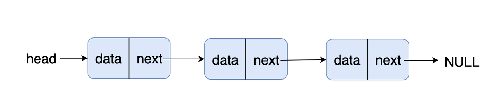
// 实现一个链表，要有 插入节点，删除节点，显示列表元素的方法
/**
* 创建节点的类
* @param {any} element 节点
*/
function Node(element) {
this.element = element;
this.next = null;
}
/**
* 链表创建
*/
function LinkList() {
this.head = new Node("head");
// 找到当前节点
this.find = function (item) {
let currNode = this.head;
while (currNode.element != item) {
currNode = currNode.next;
}
return currNode;
};
this.insert = function (newElement, item) {
const newNode = new Node(newElement);
let currentNode = this.head;
// 不存在item，则插入到最后
if (!item) {
if (!currentNode.next) {
currentNode.next = newNode;
} else {
while (currentNode.next) {
currentNode = currentNode.next;
}
currentNode.next = newNode;
}
return;
}
const current = this.find(item);
newNode.next = current.next;
current.next = newNode;
};
this.display = function () {
let currNode = this.head;
while (currNode.next !== null) {
console.log(currNode.next.element);
currNode = currNode.next;
}
};
// 找到当前节点的上一个节点
this.findPrevious = function (item) {
let currNode = this.head;
while (currNode.element != null && currNode.next.element !== item) {
currNode = currNode.next;
}
return currNode;
};
// 删除摸个节点
this.remove = function (item) {
const prevNode = this.findPrevious(item);
if (prevNode.next != null) {
prevNode.next = prevNode.next.next;
}
};
}
var cities = new LinkList();
cities.insert("Conway", "head");
cities.insert("Russellville", "Conway");
cities.insert("Carlisle", "Russellville");
cities.insert("Alma", "Carlisle");
cities.display();
console.log();
cities.remove("Carlisle");
cities.display();
// Conway
// Russellville
// Carlisle
// Alma
// Conway
// Russellville
// Alma双向链表
前后可以同时遍历的链表
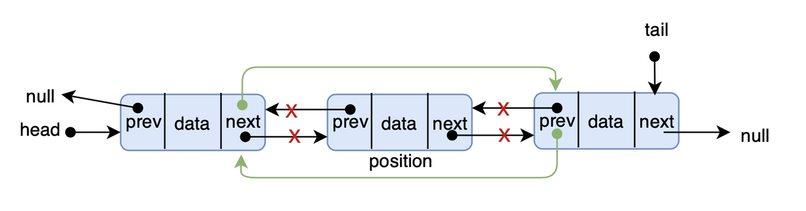
/**
* 创建节点的类
* @param {any} element 节点
*/
function Node(element) {
this.element = element;
this.next = null;
this.previous = null;
}
/**
* 双向链表创建
*/
function LinkList() {
this.head = new Node("head");
// 找到当前节点
this.find = function (item) {
let currNode = this.head;
while (currNode.element != item) {
currNode = currNode.next;
}
return currNode;
};
this.insert = function (newElement, item) {
const newNode = new Node(newElement);
const current = this.find(item);
newNode.next = current.next;
newNode.previous = current;
current.next = newNode;
};
this.display = function () {
let currNode = this.head;
while (currNode.next !== null) {
console.log(currNode.next.element);
currNode = currNode.next;
}
};
this.dispReverse = function () {
let currNode = this.findLast();
while (currNode.previous !== null) {
console.log(currNode.element);
currNode = currNode.previous;
}
};
// 删除摸个节点
this.remove = function (item) {
const currNode = this.find(item);
if (currNode.next !== null) {
currNode.previous.next = currNode.next;
currNode.next.previous = currNode.previous;
currNode.next = null;
currNode.previous = null;
}
};
// 查找最后的节点
this.findLast = function () {
let currNode = this.head;
while (currNode.next !== null) {
currNode = currNode.next;
}
return currNode;
};
}
var cities = new LinkList();
cities.insert("Conway", "head");
cities.insert("Russellville", "Conway");
cities.insert("Carlisle", "Russellville");
cities.insert("Alma", "Carlisle");
cities.display();
console.log();
cities.remove("Carlisle");
cities.dispReverse();
// Conway
// Russellville
// Carlisle
// Alma
// Alma
// Russellville
// Conway循环列表
循环列表只是在创建节点时将 next 属性指向它本身
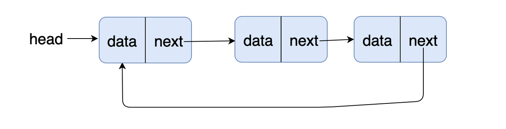
graph LR
header --> MILK
MILK --> Bread
Bread --> Eggs
Eggs --> Null
Null --> header// 循环列表
/**
* 创建节点的类
* @param {any} element 节点
*/
function Node(element) {
this.element = element;
this.next = null;
}
/**
* 单向链表创建
*/
function LinkList() {
this.head = new Node("head");
this.head.next = this.head;
// 找到当前节点
this.find = function (item) {
let currNode = this.head;
while (currNode.element != item && currNode.next.element !== "head") {
currNode = currNode.next;
}
return currNode;
};
this.insert = function (newElement, item) {
const newNode = new Node(newElement);
const current = this.find(item);
newNode.next = current.next;
current.next = newNode;
};
this.display = function () {
let currNode = this.head;
while (currNode.next !== null && currNode.next.element !== "head") {
console.log(currNode.next.element);
currNode = currNode.next;
}
};
// 找到当前节点的上一个节点
this.findPrevious = function (item) {
let currNode = this.head;
while (currNode.element != null && currNode.next.element !== item) {
currNode = currNode.next;
}
return currNode;
};
// 删除摸个节点
this.remove = function (item) {
const prevNode = this.findPrevious(item);
if (prevNode.next != null) {
prevNode.next = prevNode.next.next;
}
};
}
var cities = new LinkList();
cities.insert("Conway", "head");
cities.insert("Russellville", "Conway");
cities.insert("Carlisle", "Russellville");
cities.insert("Alma", "Carlisle");
cities.display();
console.log("---");
cities.remove("Carlisle");
cities.display();
console.log("---");
cities.findPrevious("Conway");
cities.findPrevious("Russellville");面试题
判断一个链表是否有环
- 缓存js
function isCircularLList(cities) { const map = new WeakMap(); let currNode = cities.head; while (currNode && currNode.next) { map.set(currNode, currNode); if (map.has(currNode.next)) { return true; } else { currNode = currNode.next; } } return false; } - 标记法js
let hasCycle = function (head) { while (head) { if (head.flag) return true; head.flag = true; head = head.next; } return false; }; - 利用 JSON.stringify() 不能序列化含有循环引用的结构js
let hasCycle = function (head) { try { JSON.stringify(head); return false; } catch (err) { return true; } }; - 快慢指针
let hasCycle = function (head) {
if (!head || !head.next) {
return false;
}
let fast = head.next.next,
slow = head.next;
while (fast !== slow) {
if (!fast || !fast.next) return false;
fast = fast.next.next;
slow = slow.next;
}
return true;
};字典
字典是一种以键 - 值对形式存储数据的数据结构 这个没啥好说的，就这样吧
散列
散列是一种常用的数据存储技术，散列后的数据可以快速地插入或取用。散列使用的数据 结构叫做散列表
集合
集合（set）是一种包含不同元素的数据结构。集合中的元素称为成员。集合的两个最重要特性是：首先，集合中的成员是无序的；其次，集合中不允许相同成员存在
树
树是计算机科学中经常用到的一种数据结构。树是一种非线性的数据结构，以分层的方式存储数据。
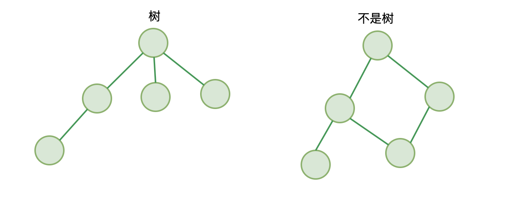
它遵循：
- 仅有唯一一个根节点，没有节点则为空树
- 除根节点外，每个节点都有并仅有唯一一个父节点
- 节点间不能形成闭环
树有几个概念：
- 拥有相同父节点的节点，互称为兄弟节点
- 节点的深度 ：从根节点到该节点所经历的边的个数
- 节点的高度 ：节点到叶节点的最长路径
- 树的高度：根节点的高度
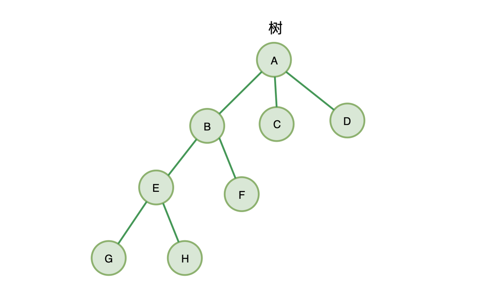
B、C、D就互称为兄弟节点，其中，节点B的高度为2，节点B的深度为 1，树的高度为3
二叉树
二叉树，故名思义，最多仅有两个子节点的树（最多能分两个叉的树）：
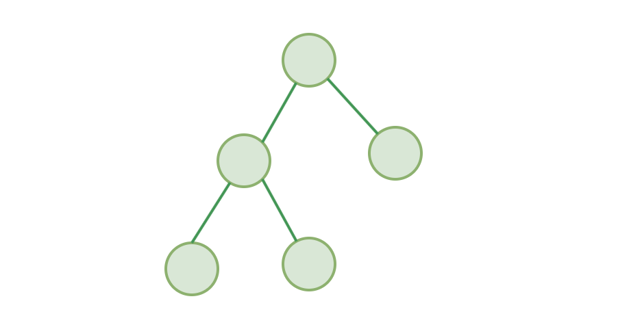
平衡二叉树
二叉树中，每一个节点的左右子树的高度相差不能大于 1，称为平衡二叉树
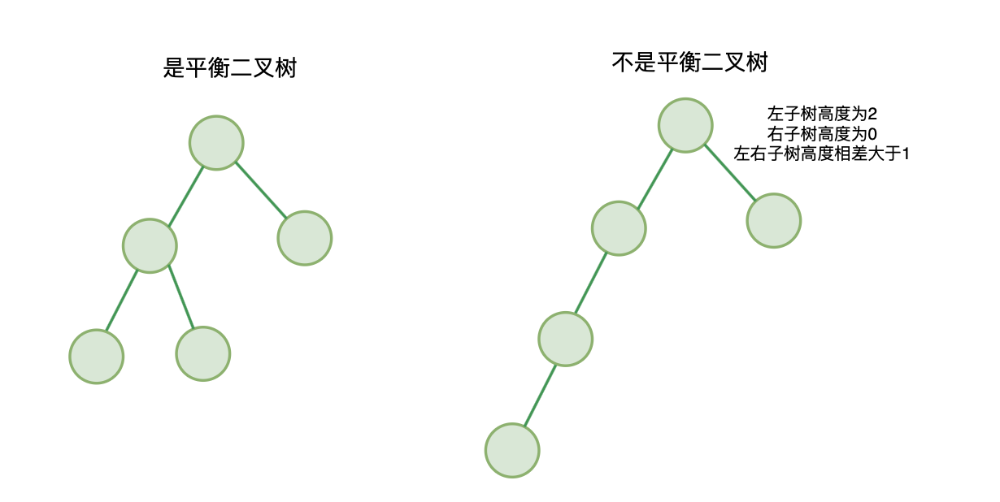
满二叉树：除了叶结点外每一个结点都有左右子叶且叶子结点都处在最底层的二叉树
完全二叉树：深度为 h，除第 h 层外，其它各层 (1 ～ h-1) 的结点数都达到最大个数，第 h 层所有的结点都连续集中在最左边
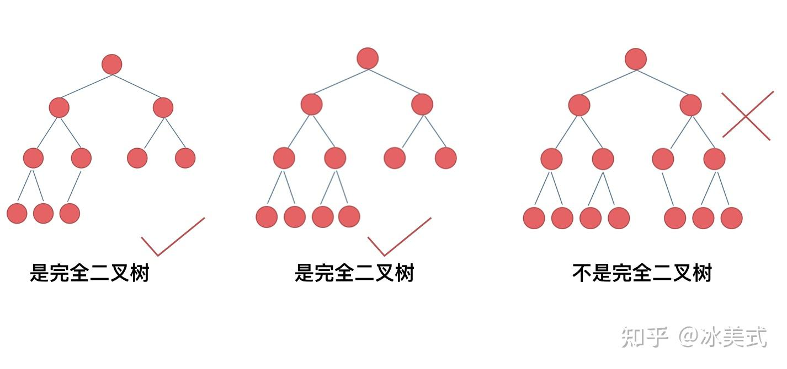
Preview
代码表示二叉树
链式存储法 节点
jsfunction Node(val) { // 保存当前节点 key 值 this.val = val; // 指向左子节点 this.left = null; // 指向右子节点 this.right = null; }一棵二叉树可以由根节点通过左右指针连接起来形成一个树
jsfunction BinaryTree() { let Node = function (val) { this.val = val; this.left = null; this.right = null; }; let root = null; }数组存储法(适用于完全二叉树)
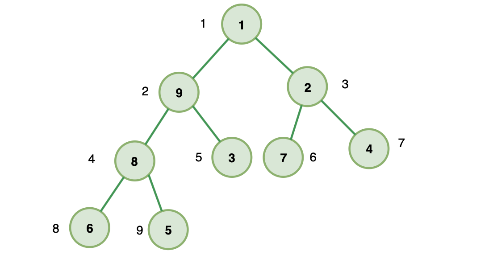
Preview上图就是一棵完全二叉树， 如果我们把根节点存放在位置 i=1 的位置，则它的左子节点位置为 2i = 2 ，右子节点位置为 2i+1 = 3 。 如果我们选取 B 节点 i=2 ，则它父节点为 i/2 = 1 ，左子节点 2i=4 ，右子节点 2i+1=5 。 以此类推，我们发现所有的节点都满足这三种关系：
- 位置为 i 的节点，它的父节点位置为 i/2
- 它的左子节点 2i
- 它的右子节点 2i+1 因此，如果我们把完全二叉树存储在数组里（从下标为 1 开始存储），我们完全可以通过下标找到任意节点的父子节点。从而完整的构建出这个完全二叉树。这就是数组存储法。 数组存储法相对于链式存储法不需要为每个节点创建它的左右指针，更为节省内存。
二叉树遍历
前序遍历 对于二叉树中的任意一个节点，先打印该节点，然后是它的左子树，最后右子树
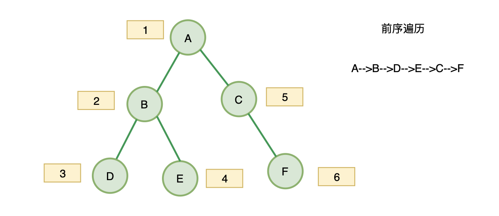
Preview中序遍历 对于二叉树中的任意一个节点，先打印它的左子树，然后是该节点，最后右子树
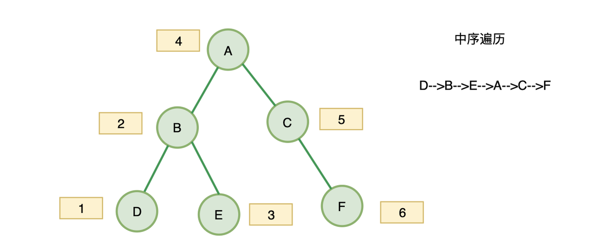
Preview后序遍历 对于二叉树中的任意一个节点，先打印它的左子树，然后是右子树，最后该节点
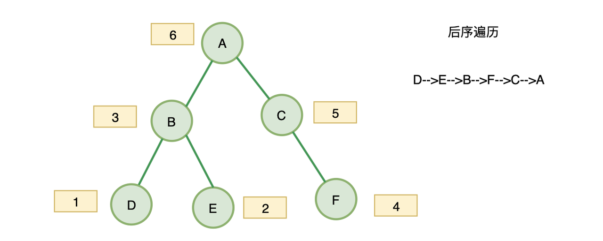
Previewjsfunction tree(val) { this.val = val; // 左节点 this.left = null; // 右节点 this.right = null; this.show = show; } function show() { return this.val; } function BST() { this.root = null; this.insert = insert; // this.inOrder = inOrder; } // 中序遍历 function inOrder(node) { if (node !== null) { inOrder(node.left); console.log(node.show()); inOrder(node.right); } } function preOrder(node) { if (node !== null) { console.log(node.show()); preOrder(node.left); preOrder(node.right); } } function postOrder(node) { if (node !== null) { postOrder(node.left); postOrder(node.right); console.log(node.show()); } } function insert(val) { const node = new tree(val); if (this.root === null) { this.root = node; } else { let current = this.root; let parent; while (true) { parent = current; if (val < current.val) { current = parent.left; if (current === null) { parent.left = node; break; } } else { current = parent.right; if (current === null) { parent.right = node; break; } } } } } var nums = new BST(); nums.insert(23); nums.insert(45); nums.insert(16); nums.insert(37); nums.insert(3); nums.insert(99); nums.insert(22); console.log("Inorder traversal: "); console.log("前"); preOrder(nums.root); // 23 16 3 22 45 37 99 console.log("中"); inOrder(nums.root); // 3 16 22 23 37 45 99 console.log("后"); postOrder(nums.root); // 3 22 16 37 99 45 23非递归版本
js// 前序遍历 function preOrderStack(node) { const stack = []; const list = []; stack.push(node); while (stack.length) { let current = stack.pop(); list.push(current.val); // 先打印左侧， 所以先把右侧入队 if (current.right) { stack.push(current.right); } if (current.left) { stack.push(current.left); } } return list; } // 中序遍历 function inOrderStack(node) { const stack = []; const list = []; let current = node; while (stack.length || current) { while (current) { stack.push(current); current = current.left; } current = stack.pop(); list.push(current.val); current = current.right; } console.log(list); return list; }
DFS 和 BFS
- DFS：深度优先遍历
- BFS：广度优先遍历
高级算法
动态规划
动态规划解决方案从底部开始解决问题，将所有小问题解决掉，然后合并成一个整体解决方案，从而解决掉整个大问题 使用动态规划设计的算法从它能解决的最简单的子问题开始，继而通过得到的解，去解决其他更复杂的子问题，直到整个问题都被解决。所有子问题的解通常被存储在一个数组里以便于访问
计算斐波那契数列
0, 1, 1, 2, 3, 5, 8;递归计算
function recurFib(n) {
if (n < 2) {
return n;
} else {
return recurFib(n - 1) + recurFib(n - 2);
}
}动态规划
function dynFib(n) {
let val = [];
for (let i = 0; i < n; i++) {
val[i] = 0;
}
if (n == 1 || n == 2) {
return 1;
} else {
val[1] = 1;
val[2] = 2;
for (let i = 3; i < n; i++) {
val[i] = val[i - 1] + val[i - 2];
}
return val[n - 1];
}
}
function dynFib1(n) {
let last = 1;
let nextLast = 1;
let result = 1;
for (let i = 2; i < n; i++) {
result = last + nextLast;
nextLast = last;
last = result;
}
return result;
}寻找最长公共子串
暴力法 多层遍历
jsfunction longestCommonSubstring1(a1, a2) { const length1 = a1.length; const length2 = a2.length; let max = []; let i = 0; while (i < length1) { const st1 = a1[i]; let j = 0; while (j < length2) { let temList = []; const st2 = a2[j]; if (st1 === st2) { temList.push(st1); let k = i + 1; let f = j + 1; while (k < length1 && f < length2) { if (a1[k] === a2[f]) { temList.push(a1[k]); k++; f++; } else { break; } } max.push(temList.join("")); j++; } else { j++; } } i++; } return max.sort((a, b) => b.length - a.length)[0]; }动态规划 实际上是吧对应字符串放到字符串长度+2 的二维数组中， 这样每一个字符都都有一个位置， 可以记录是否相等， 然后记录最大长度和位置， 最后根据位置截取字符串
jsfunction lcs(word1, word2) { var max = 0; var index = 0; var lcsarr = new Array(word1.length + 1); for (var i = 0; i <= word1.length + 1; ++i) { lcsarr[i] = new Array(word2.length + 1); for (var j = 0; j <= word2.length + 1; ++j) { lcsarr[i][j] = 0; } } for (var i = 0; i <= word1.length; ++i) { for (var j = 0; j <= word2.length; ++j) { if (i == 0 || j == 0) { lcsarr[i][j] = 0; } else { if (word1[i - 1] == word2[j - 1]) { lcsarr[i][j] = lcsarr[i - 1][j - 1] + 1; } else { lcsarr[i][j] = 0; } } if (max < lcsarr[i][j]) { max = lcsarr[i][j]; index = i; } } } var str = ""; if (max == 0) { return ""; } else { for (var i = index - max; i < index; ++i) { str += word1[i]; } return str; } }
背包问题
背包问题是算法研究中的一个经典问题。试想你是一个保险箱大盗，打开了一个装满奇珍异宝的保险箱，但是你必须将这些宝贝放入你的一个小背包中。保险箱中的物品规格和价值不同。你希望自己的背包装进的宝贝总价值最大。 当然，暴力计算可以解决这个问题，但是动态规划会更为有效。使用动态规划来解决背包问题的关键思路是计算装入背包的每一个物品的最大价值，直到背包装满。 如果在我们例子中的保险箱中有 5 件物品，它们的尺寸分别是 3、4、7、8、9，而它们的价值分别是 4、5、10、11、13，且背包的容积为 16，那么恰当的解决方案是选取第三件物品和第五件物品，他们的总尺寸是 16，总价值是 23。
物品 A B C D E
价值 4 5 10 11 13
尺寸 3 4 7 8 9
递归解决
jsfunction knapsack(capacity, objectArr, order) { if (order < 0 || capacity <= 0) { return 0; } if (arr[order].size > capacity) { return knapsack(capacity, objectArr, order - 1); } return Math.max( arr[order].value + knapsack(capacity - arr[order].size, objectArr, order - 1), knapsack(capacity, objectArr, order - 1) ); } console.log( knapsack( 16, [ { value: 4, size: 3 }, { value: 5, size: 4 }, { value: 10, size: 7 }, { value: 11, size: 8 }, { value: 13, size: 9 }, ], 4 ) ); // 23动态规划 0-1 背包问题子结构：选择一个给定第 i 件物品，则需要比较选择第 i 件物品的形成的子问题的最优解与不选择第 i 件物品的子问题的最优解。分成两个子问题，进行选择比较，选择最优的。
也就是一个物品不选,则取上一个子问题的最优解;一个物品选,则取上一个子问题剩余容量的最优解。
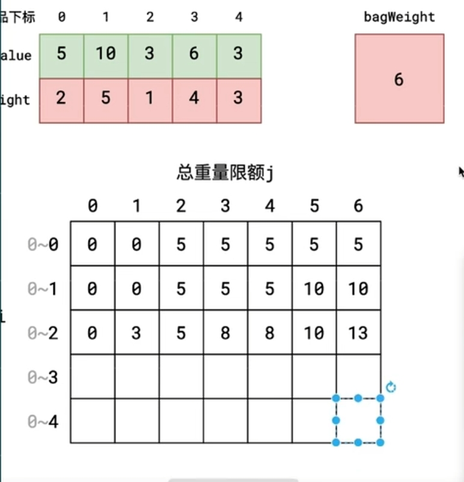
Previewjsf[i][w] = max{ f[i-1][w], f[i-1][w-w[i]]+v[i] }其中，w[i] 表示第 i 件物品的重量，v[i] 表示第 i 件物品的价值。
jsfunction knapsack(capacity, objectArr) { var n = objectArr.length; var f = []; for (var i = 0; i <= n; i++) { f[i] = []; for (var w = 0; w <= capacity; w++) { if (i === 0 || w === 0) { f[i][w] = 0; } else if (objectArr[i - 1].size <= w) { var size = objectArr[i - 1].size, value = objectArr[i - 1].value; f[i][w] = Math.max(f[i - 1][w - size] + value, f[i - 1][w]); } else { f[i][w] = f[i - 1][w]; } } } return f[n][capacity]; }以上方法空间复杂度和时间复杂度是 O(nm)，其中 n 为物品个数，m 为背包容量。时间复杂度没有优化的余地了，但是空间复杂我们可以优化到 O(m)。首先我们要改写状态转移方程
jsf[w] = max{ f[w], f[w-w[i]]+v[i] }jsfunction knapsack(capacity, objectArr) { var n = objectArr.length; var f = []; for (var w = 0; w <= capacity; w++) { for (var i = 0; i < n; i++) { if (w === 0) { f[w] = 0; } else if (objectArr[i].size <= w) { var size = objectArr[i].size, value = objectArr[i].value; f[w] = Math.max(f[w - size] + value, f[w] || 0); } else { f[w] = Math.max(f[w] || 0, f[w - 1]); } } } return f[capacity]; } // 另一种写法和上面差不多 function knapsack3(capacity, objectArr) { let result = []; // 计算第一个物品的值 for (let i = 0; i <= capacity; i++) { result[i] = size[0] <= i ? value[0] : 0; } // 重下标1开始循环到物品最大下标 for (let i = 1; i <= objectArr.length; i++) { const next = []; for (let j = 0; j <= capacity; j++) { const size = objectArr[i - 1].size; const value = objectArr[i - 1].value; if (j >= size) { next[j] = Math.max(result[j], value + result[j - size]); } else { next[j] = result[j]; } } result = next; } return result[capacity]; }
背包问题
如果放入背包的物品从本质上说是连续的，那么就可以使用贪心算法来解决背包问题。换句话说，该物品必须是不能离散计数的，比如布匹和金粉。如果用到的物品是连续的，那么可以简单地通过物品的单价除以单位体积来确定物品的价值。在这种情况下的最优 是，先装价值最高的物品直到该物品装完或者将背包装满，接着装价值次高的物品，直到这种物品也装完或将背包装满，以此类推。我们把这种问题类型叫做 “部分背包问题”
排序算法
冒泡排序
冒泡排序是一种简单的排序算法。它重复地遍历要排序的数列,一次比较两个元素,如果顺序错误就把它们交换过来。遍历的最终结果是会把最大的数冒泡地沉到最底下,最小的数会像鱼泡一样被冒泡地推到最上面来。
思想
- 冒泡排序只会操作相邻的两个数据。
- 每次冒泡操作都会对相邻的两个元素进行比较，看是否满足大小关系要求。如果不满足就让它俩互换。
- 一次冒泡会让至少一个元素移动到它应该在的位置，重复 n 次，就完成了 n 个数据的排序工作。
特点
- 优点：排序算法的基础，简单实用易于理解。
- 缺点：比较次数多，效率较低
实现
jsfunction bubbleSort(arr) { const length = arr.length; if (length <= 1) return arr; for (let i = 0; i < length; i++) { let isChanged = false; for (let j = 0; j < length - 1 - i; j++) { if (arr[j] > arr[j + 1]) { [arr[j], arr[j + 1]] = [arr[j + 1], arr[j]]; isChanged = true; } } if (!isChanged) { return arr; } } }分析
- 冒泡排序是原地排序算法吗 ? 冒泡的过程只涉及相邻数据的交换操作，只需要常量级的临时空间，所以它的空间复杂度为 O(1)，是一个原地排序算法。
- 冒泡排序是稳定的排序算法吗 ？ 在冒泡排序中，只有交换才可以改变两个元素的前后顺序。 为了保证冒泡排序算法的稳定性，当有相邻的两个元素大小相等的时候，我们不做交换，相同大小的数据在排序前后不会改变顺序。 所以冒泡排序是稳定的排序算法。
- 冒泡排序的时间复杂度是多少 ？ 最佳情况：T(n) = O(n)，当数据已经是正序时。 最差情况：T(n) = O(n(2))，当数据是反序时。 平均情况：T(n) = O(n(2))。
动画
 Preview
Preview
插入排序
插入排序又为分为 直接插入排序 和优化后的 拆半插入排序 与 希尔排序我们通常说的插入排序是指直接插入排序。
直接插入排序
思想 一般人打扑克牌，整理牌的时候，都是按牌的大小（从小到大或者从大到小）整理牌的，那每摸一张新牌，就扫描自己的牌，把新牌插入到相应的位置。 插入排序的工作原理：通过构建有序序列，对于未排序数据，在已排序序列中从后向前扫描，找到相应位置并插入。
步骤
- 从第一个元素开始，该元素可以认为已经被排序；
- 取出下一个元素，在已经排序的元素序列中从后向前扫描；
- 如果该元素（已排序）大于新元素，将该元素移到下一位置；
- 重复步骤 3，直到找到已排序的元素小于或者等于新元素的位置；
- 将新元素插入到该位置后；
- 重复步骤 2 ~ 5。
实现
jsfunction insertionSort(arr) { const length = arr.length; if (length <= 1) return arr; for (let i = 1; i < length; i++) { let current = arr[i]; //当前元素 let j = i - 1; // 待比较的元素下标 while (j >= 0 && arr[j] > current) { arr[j + 1] = arr[j]; //将待比较元素后移一位 j--; } // 只有有移动过元素才插入 if (j + 1 != i) { arr[j + 1] = current; //将当前元素插入到正确的位置 } } return arr; }分析
- 插入排序是原地排序算法吗 插入排序算法的运行并不需要额外的存储空间，所以空间复杂度是 O(1)，所以，这是一个原地排序算法。
- 插入排序是稳定的排序算法吗 ？ 在插入排序中，对于值相同的元素，我们可以选择将后面出现的元素，插入到前面出现元素的后面，这样就可以保持原有的前后顺序不变，所以插入排序是稳定的排序算法。
- 插入排序的时间复杂度是多少 ？ 最佳情况：T(n) = O(n)，当数据已经是正序时。 最差情况：T(n) = O(n(2))，当数据是反序时。 平均情况：T(n) = O(n(2))。
动画
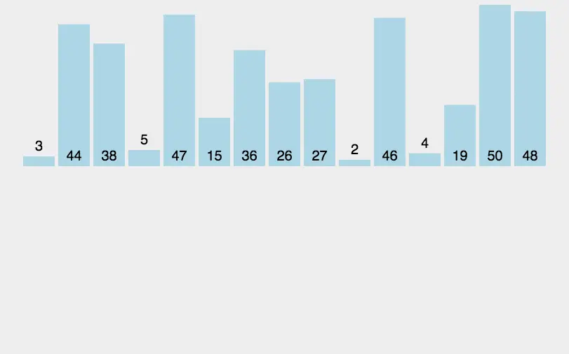
Preview
拆半插入
插入排序也有一种优化算法，叫做拆半插入。
思想 折半插入排序是直接插入排序的升级版，鉴于插入排序第一部分为已排好序的数组，我们不必按顺序依次寻找插入点，只需比较它们的中间值与待插入元素的大小即可
步骤
- 取 0 ~ i-1 的中间点 ( m = (i-1) >> 1 )，array[i] 与 array[m] 进行比较，若 array[i] < array[m]，则说明待插入的元素 array[i] 应该处于数组的 0 ~ m 索引之间；反之，则说明它应该处于数组的 m ~ i-1 索引之间。
- 重复步骤 1，每次缩小一半的查找范围，直至找到插入的位置。
- 将数组中插入位置之后的元素全部后移一位。
- 在指定位置插入第 i 个元素。
注：x >> 1 是位运算中的右移运算，表示右移一位，等同于 x 除以 2 再取整，即 x >> 1 == Math.floor(x/2)
实现
jsconst binaryInsertionSort = (array) => { const len = array.length; if (len <= 1) return; let current, i, j, low, high, m; for (i = 1; i < len; i++) { low = 0; high = i - 1; current = array[i]; while (low <= high) { //步骤 1 & 2 : 折半查找 m = (low + high) >> 1; // 注: x>>1 是位运算中的右移运算, 表示右移一位, 等同于 x 除以 2 再取整, 即 x>>1 == Math.floor(x/2) . if (array[i] >= array[m]) { //值相同时, 切换到高半区，保证稳定性 low = m + 1; //插入点在高半区 } else { high = m - 1; //插入点在低半区 } } for (j = i; j > low; j--) { //步骤 3: 插入位置之后的元素全部后移一位 array[j] = array[j - 1]; } array[low] = current; //步骤 4: 插入该元素 } return array; };注意：和直接插入排序类似，折半插入排序每次交换的是相邻的且值为不同的元素，它并不会改变值相同的元素之间的顺序，因此它是稳定的
选择排序
- 思路 选择排序算法的实现思路有点类似插入排序，也分已排序区间和未排序区间。但是选择排序每次会从未排序区间中找到最小的元素，将其放到已排序区间的末尾。
- 步骤
- 首先在未排序序列中找到最小（大）元素，存放到排序序列的起始位置。
- 再从剩余未排序元素中继续寻找最小（大）元素，然后放到已排序序列的末尾。
- 重复第二步，直到所有元素均排序完毕。
- 实现js
function selectionSort(arr) { for (let i = 0; i < arr.length; i++) { let min = i; for (let j = i + 1; j < arr.length; j++) { if (arr[j] < arr[min]) { min = j; } } [arr[i], arr[min]] = [arr[min], arr[i]]; } return arr; } - 分析
- 选择排序是原地排序算法吗 ？ 选择排序空间复杂度为 O(1)，是一种原地排序算法。
- 选择排序是稳定的排序算法吗 ？ 选择排序每次都要找剩余未排序元素中的最小值，并和前面的元素交换位置，这样破坏了稳定性。所以，选择排序是一种不稳定的排序算法。
- 选择排序的时间复杂度是多少 ？ 无论是正序还是逆序，选择排序都会遍历 n(2) / 2 次来排序，所以，最佳、最差和平均的复杂度是一样的。 最佳情况：T(n) = O(n(2))。 最差情况：T(n) = O(n(2))。 平均情况：T(n) = O(n(2))。
- 动画
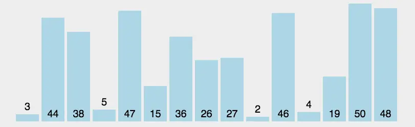
Preview
归并排序
- 思路 排序一个数组，我们先把数组从中间分成前后两部分，然后对前后两部分分别排序，再将排好序的两部分合并在一起，这样整个数组就都有序了。 归并排序采用的是分治思想。 分治，顾名思义，就是分而治之，将一个大问题分解成小的子问题来解决。小的子问题解决了，大问题也就解决了。
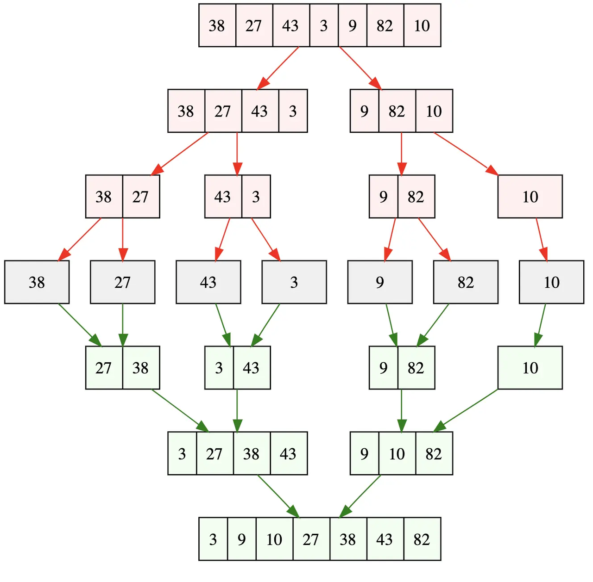
Preview
注：x >> 1 是位运算中的右移运算，表示右移一位，等同于 x 除以 2 再取整，即 x >> 1 === Math.floor(x / 2)
实现
jsconst merge = (left, right) => { let tem = []; let leftIndex = 0; let rightIndex = 0; while (leftIndex < left.length && rightIndex < right.length) { if (left[leftIndex] < right[rightIndex]) { tem.push(left[leftIndex]); leftIndex++; } else { tem.push(right[rightIndex]); rightIndex++; } } // 说明左侧还有剩余 if (leftIndex < left.length) { tem.push(...left.slice(leftIndex)); } if (rightIndex < right.length) { tem.push(...right.slice(rightIndex)); } return tem; }; const mergeSort = (arr) => { if (arr.length <= 1) return arr; const middle = Math.floor(arr.length / 2); const left = arr.slice(0, middle); const right = arr.slice(middle); return merge(mergeSort(left), mergeSort(right)); };分析
- 归并排序是原地排序算法吗 ？ 这是因为归并排序的合并函数，在合并两个有序数组为一个有序数组时，需要借助额外的存储空间。 实际上，尽管每次合并操作都需要申请额外的内存空间，但在合并完成之后，临时开辟的内存空间就被释放掉了。在任意时刻，CPU 只会有一个函数在执行，也就只会有一个临时的内存空间在使用。临时内存空间最大也不会超过 n 个数据的大小，所以空间复杂度是 O(n)。 所以，归并排序不是原地排序算法。
- 归并排序是稳定的排序算法吗 ？ merge 方法里面的 left[0] <= right[0] ，保证了值相同的元素，在合并前后的先后顺序不变。归并排序是稳定的排序方法。
- 归并排序的时间复杂度是多少 ？ 从效率上看，归并排序可算是排序算法中的佼佼者。假设数组长度为 n，那么拆分数组共需 logn 步，又每步都是一个普通的合并子数组的过程，时间复杂度为 O(n)，故其综合时间复杂度为 O(n log n)。 最佳情况：T(n) = O(n log n)。 最差情况：T(n) = O(n log n)。 平均情况：T(n) = O(n log n)。
动画
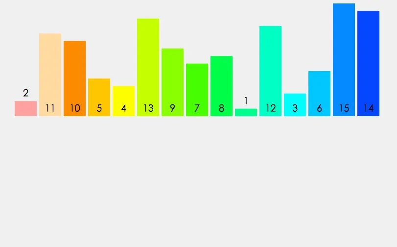
Preview
快速排序
快速排序的特点就是快，而且效率高！它是处理大数据最快的排序算法之一
思路
- 先找到一个基准点（一般指数组的中部），然后数组被该基准点分为两部分，依次与该基准点数据比较，如果比它小，放左边；反之，放右边。
- 左右分别用一个空数组去存储比较后的数据。
- 最后递归执行上述操作，直到数组长度 <= 1; 特点：快速，常用。 缺点：需要另外声明两个数组，浪费了内存空间资源
实现
jsfunction quickSort(arr) { let len = arr.length; if (len < 2) { return arr; } let pivot = arr[0]; let left = []; let right = []; for (let i = 1; i < len; i++) { if (arr[i] < pivot) { left.push(arr[i]); } else { right.push(arr[i]); } } return quickSort(left).concat([pivot], quickSort(right)); }分析
- 快速排序是原地排序算法吗 ？ 因为 partition() 函数进行分区时，不需要很多额外的内存空间，所以快排是原地排序算法。
- 快速排序是稳定的排序算法吗 ？ 和选择排序相似，快速排序每次交换的元素都有可能不是相邻的，因此它有可能打破原来值为相同的元素之间的顺序。因此，快速排序并不稳定。
- 快速排序的时间复杂度是多少 ？ 极端的例子：如果数组中的数据原来已经是有序的了，比如 1，3，5，6，8。如果我们每次选择最后一个元素作为 pivot，那每次分区得到的两个区间都是不均等的。我们需要进行大约 n 次分区操作，才能完成快排的整个过程。每次分区我们平均要扫描大约 n / 2 个元素，这种情况下，快排的时间复杂度就从 O(nlogn) 退化成了 O(n(2))。 最佳情况：T(n) = O(n log n)。 最差情况：T(n) = O(n(2))。 平均情况：T(n) = O(n log n)
算法真题
双指针
- 碰撞指针 -> <- 要先排序
- 快慢指针 -> -->
两数之和[leetcode-1]
// 暴力解法
var twoSum = function (nums, target) {
for (let i = 0; i < nums.length; i++) {
for (let j = i + 1; j < nums.length; j++) {
if (nums[i] + nums[j] === target) {
return [i, j];
}
}
}
};
// 双指针法
var twoSum = function (nums, target) {
const newNums = [...nums].sort((a, b) => a - b);
let left = 0,
right = newNums.length - 1;
while (left < right) {
if (newNums[left] + newNums[right] === target) {
const leftIdx = nums.indexOf(newNums[left]);
const rightIdx = nums.lastIndexOf(newNums[right]);
return [leftIdx, rightIdx];
} else if (newNums[left] + newNums[right] < target) {
left++;
} else {
right--;
}
}
};三数之和[leetcode-16]
// 暴力解法
var threeSumClosest = function (nums, target) {
let resultList = [];
let result = undefined;
for (let i = 0; i < nums.length; i++) {
const n1 = nums[i];
for (let k = i + 1; k < nums.length; k++) {
const n2 = nums[k];
for (let j = k + 1; j < nums.length; j++) {
const n3 = nums[j];
if (typeof result === "undefined") {
result = Math.abs(target - (n1 + n2 + n3));
resultList = [n1, n2, n3];
} else {
if (result > Math.abs(target - (n1 + n2 + n3))) {
result = Math.abs(target - (n1 + n2 + n3));
resultList = [n1, n2, n3];
}
}
}
}
}
return resultList.reduce((total, cur) => total + cur);
};
// 双指针
var threeSumClosest = function (nums, target) {
const length = nums.length;
if (length === 3) {
return nums.reduce((total, cur) => total + cur);
}
nums = nums.sort((a, b) => a - b);
let min = Infinity;
let res;
for (let i = 0; i < length - 2; i++) {
let left = i + 1;
let right = length - 1;
const basic = nums[i];
while (left < right) {
let sum = basic + nums[left] + nums[right];
let diff = Math.abs(target - sum);
if (diff < min) {
min = diff;
res = sum;
}
if (sum < target) {
left++;
} else {
right--;
}
}
}
return res;
};判断子序列[leetcode-392]
var isSubsequence = function (s, t) {
let sl = s.length;
if (!sl) return true;
let i = 0;
let j = 0;
while (i < sl && j < t.length) {
if (s[i] === t[j]) {
i++;
j++;
} else {
j++;
}
}
if (i === sl) return true;
return false;
};移动 0[leetcode-283]
暴力法 先遍历一次，找出所有 0 的下标，然后把删除的 0 元素存储起来， 再 push 到末尾。
js// 暴力法 借用数组的方法 var moveZeroes = function (nums) { const length = nums.length; if (length === 1) return nums; let list = []; let i = 0; while (i + list.length < length) { if (nums[i] === 0) { list.push(...nums.splice(i, 1)); } else { i++; } } nums.push(...list); return nums; };双指针 慢指针 j 从 0 开始，当快指针 i 遍历到非 0 元素的时候，i 和 j 位置的元素交换,然后把 j + 1。 也就是说，快指针 i 遍历完毕后, [0, j) 区间就存放着所有非 0 元素，而剩余的[j, n]区间再遍历一次，用 0 填充满即可
js// 找到不为0的放到前面。，剩下的全部换成0 var moveZeroes = function (nums) { let j = 0; for (let i = 0; i < nums.length; i++) { // 找到所有不为0的数， 放到前面 if (nums[i] !== 0) { nums[j] = nums[i]; j++; } } // 将其他小标的数据换成0 while (j < nums.length) { nums[j] = 0; j++; } return nums; };双指针(交换位置) 在上面的算法里，快指针遍历完成后，还要遍历慢指针到末尾来填充 0。实际上这题只要遇 到非 0 元素，就把当前位置的值和慢指针位置 j 的值交换，然后只有此时 j 才 + 1，即 可完成
jsvar moveZeroes = function (nums) { let j = 0; for (let i = 0; i < nums.length; i++) { if (nums[i] !== 0) { [nums[j], nums[i]] = [nums[i], nums[j]]; j++; } } return nums; };
通过删除字母匹配到字典里最长单词 [leetcode-528]
var findLongestWord = function (s, dictionary) {
let newList = dictionary.sort();
let resultList = [];
for (let i = 0; i < newList.length; i++) {
let j = 0; // 当前单词的指针
let k = 0; // 字符串的指针
let item = newList[i];
while (j < item.length && k < s.length) {
if (s[k] === item[j]) {
k++;
j++;
} else {
k++;
}
}
if (j === item.length) {
resultList.push(item);
}
}
// 不存在
if (resultList.length === 0) return "";
resultList = resultList.sort((a, b) => b.length - a.length);
// 找到和第一个长度一样的所有数据
resultList = resultList.filter((v) => v.length === resultList[0].length);
return resultList.sort()[0];
};滑动窗口
- 定长滑动窗口
- 不定长滑动窗口
滑动窗口最大值 [leetcode-239]
// 数据多的时候时间不够
var maxSlidingWindow = function (nums, k) {
let list = [];
for (let i = 0; i <= nums.length - k; i++) {
const maxItem = Math.max(...nums.slice(i, i + k));
list.push(maxItem);
}
return list;
};
// 优化后
var maxSlidingWindow = function (nums, k) {
if (!nums.length || nums.length < k) return nums;
const window = new MonotonicQueuqe();
let res = [];
for (let i = 0; i < nums.length; i++) {
if (i < k - 1) {
window.push(nums[i]);
} else {
window.push(nums[i]);
res.push(window.max());
window.pop(nums[i - k + 1]);
}
}
return res;
};
function MonotonicQueuqe() {
let queue = [];
// 维护一个单调递减队列
this.push = function (n) {
while (queue.length && queue[queue.length - 1] < n) {
queue.pop();
}
queue.push(n);
};
this.max = function () {
return queue[0];
};
this.pop = function (n) {
if (n === queue[0]) {
queue.shift();
}
};
}